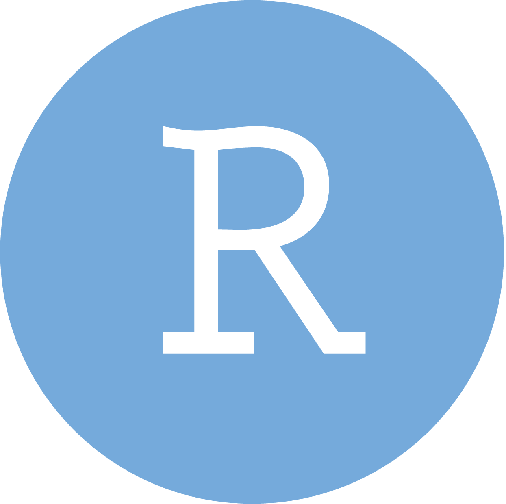
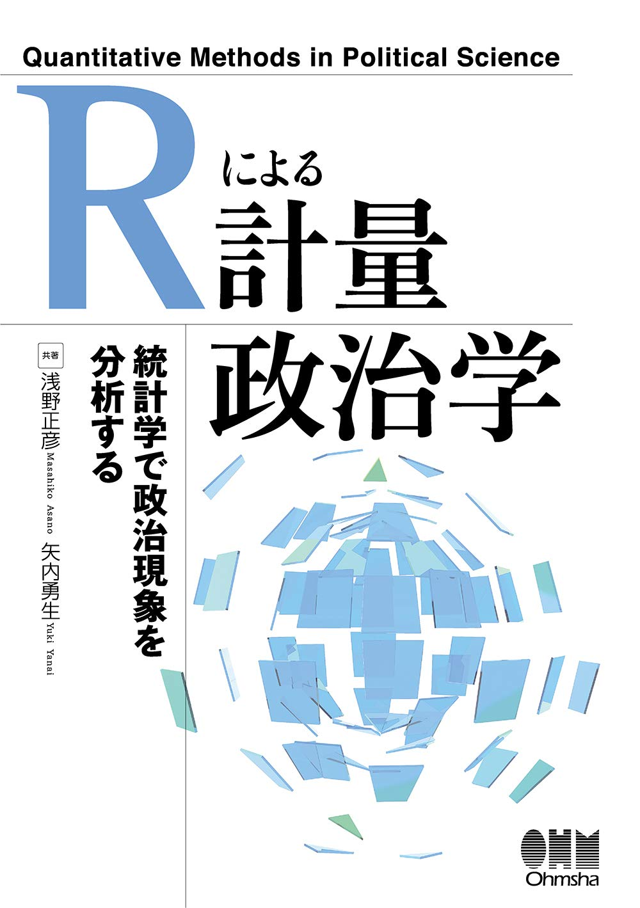
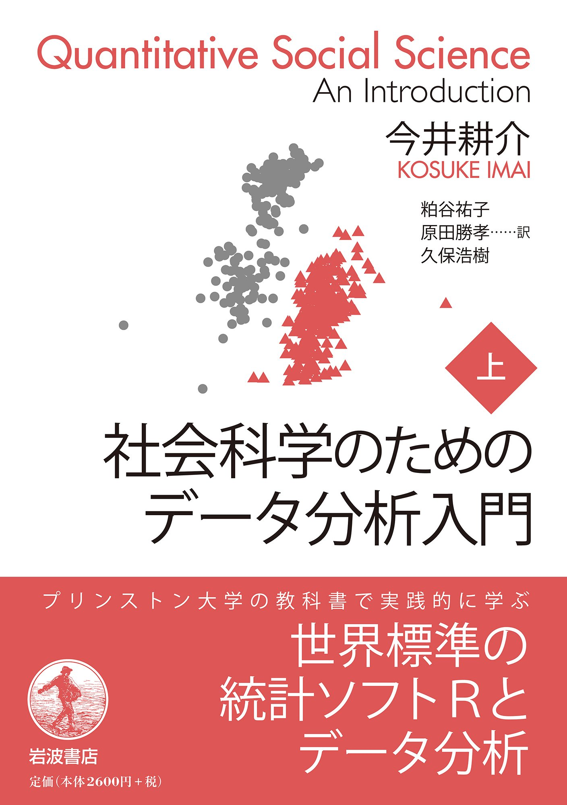
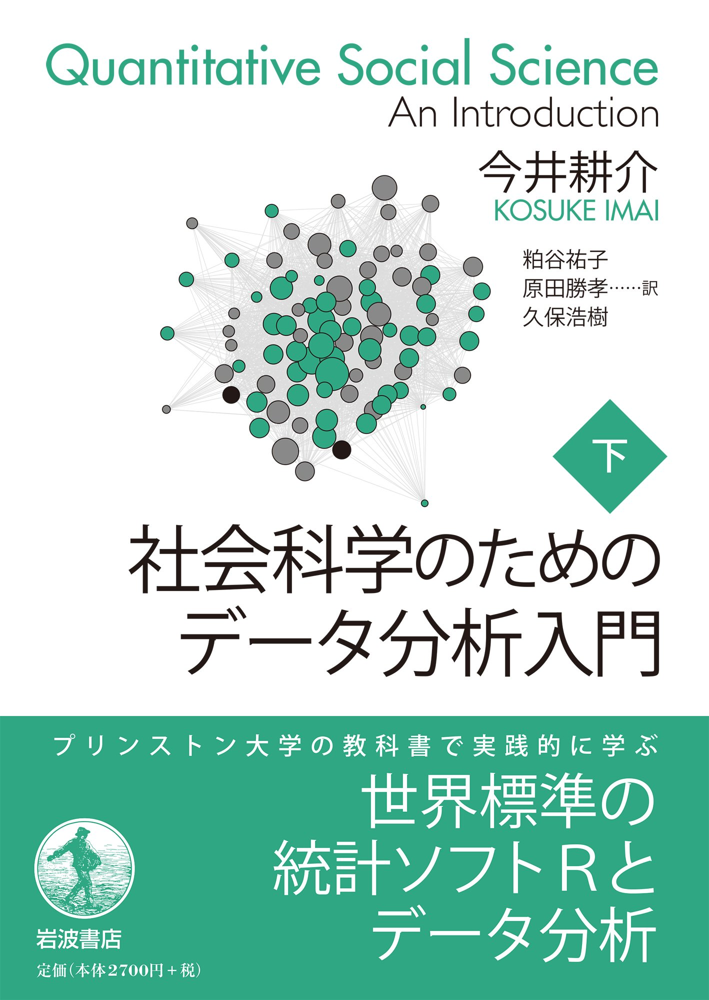

| 内容 | 『私たちのR』 | 「ミクロ政治データ分析実習」 |
|---|---|---|
| データの入出力 | 第7、8章 | 第3回 |
| データ型とデータ構造 | 第9、10章 | 第7、8回 |
| Quarto | 第24、26章 | 第5回 |
| {dplyr}と{tidyr}を用いたデータハンドリング | 第13、14、15、16、17章 | 第9、10、11回 |
| {ggplot2}を用いた可視化 | 第19、20、21章 | 第12、13、14回 |
マクロ政治データ分析実習
第1回 ガイダンス
宋 財泫
関西大学総合情報学部
2024-09-26
講義概要
講義概要
- 講義日：木曜日 第4時限（14:40～16:10）
- 場所：TC302教室（高槻キャンパス C棟 302教室）
- 講義内容：社会科学のリサーチデザイン & Rを用いたデータ分析の基礎
- リサーチデザイン
- 統計的推論・仮説検定
- 平均値の（差の）検定
- 相関分析
- 独立性の検定
- 線形回帰分析
- ロジスティック回帰分析
- Rの使い方そのものについては解説しない。
- Rの使い方は前期の「ミクロ政治データ分析実習」で解説済み
- 前提知識: 前期の「ミクロ政治データ分析実習」を履修すること。
- 未修の場合、{dplyr}、{tidyr}、{ggplot2}に関する知識が必要。
- ブラインドタッチが出来ること。
講義内容
- 第1回：ガイダンス
- 第2回：リサーチデザイン（1）
- 第3回：リサーチデザイン（2）
- 第4回：記述統計
- 第5回：統計的推定
- 第6回：統計的仮説検定
- 第7回：変数間の関係
- 第8回：回帰分析（1）
- 第9回：回帰分析（2）
- 第10回：回帰分析（3）
- 第11回：交互作用
- 第12回：分析結果の可視化
- 第13回：ロジスティック回帰分析
- 第14回：期末レポートの執筆
- 第15回：期末レポートの執筆
使用ツール: R
R/RStudioのインストール方法は紹介しない
- 使用するR/RStudioはJDCat分析ツール
- 期末レポートを除く課題は全てQuarto使用する。


【重要】前提知識
- 前期の「ミクロ政治データ分析実習」が履修済みか、それに相当する知識を持っていること
- 第4回（10月17日）からRを使用する。
- 未修者の場合は10月16日まで、『私たちのR』を全て読むか、前期講義資料内容を全て習得しておくこと。
- ブラインド・タッチが出来ること。
- できない場合は、第4回まで習得しておくこと。
- グーグルで「タイビング 練習」で検索
教科書・参考書
教科書
浅野正彦・矢内勇生. 2018.『Rによる計量政治学』オーム社.
- サポートページ: https://github.com/yukiyanai/quant-methods-R
- データ、解説資料、正誤表など

参考書


副読本
Rの使い方については以下の本がおすすめ
- Song Jaehyun・矢内勇生.『私たちのR: ベストプラクティスの探究』(web-book)
- 松村優哉・湯谷啓明・紀ノ定保礼・前田和寛. 2021. 『改訂2版 RユーザのためのRStudio[実践]入門』技術評論社
- Garrett Grolemund and Hadley Wickham. 2017. R for Data Science. O’Reilly.
- 邦訳『Rではじめるデータサイエンス』
- 原著は無料: https://r4ds.had.co.nz/
- Jared P. Lander. 2018. R for Everyone. Addison-Wesley Professional.
- 邦訳『みんなのR』
評価
成績評価
- 平常点（30%）
- 欠席4回以上は評価の対象外（3回まで評価対象）
- 欠席届を提出した場合は出席扱い
- 課題（40%）
- 課題は計4〜5回を予定
- 3回以上未提出は評価の対象外（2回未提出までは評価対象）
- 課題提出期限の延長はない (提出までの期間が長めであるため)
- 提出期限は次回講義の前日23時59分まで
- 期限内に提出できなかった場合でも宋に連絡する必要はない（どうせ延ばしてくれない）。
- 期末レポート（30%）
- 自分独自の問いを立て、その問いに答えるための過程と結果を記録したレポート
- 未提出者は評価対象外
- 授業の第14・15回は期末レポートの執筆
- 「評価対象」とは「採点の対象」であることを意味し、単位を保障するものではない。
- 不正行為厳禁
オフィス・アワー
宋、またはTAが研究室に待機し、事前予約なしに相談、質問などが可能な時間
- 毎週木曜日3・5限（13時00分〜14時30分/16時20分〜17時50分）
- 場所：TA227研究室（A棟の2階）
- 上記の時間外は事前予約が必要（LMS、メール、対面）
- songkansai-u.ac.jp
授業時間外のフィードバックについて
- オフィス・アワー以外のフィードバック方法
- 対面（推奨）
- 事前予約が必要（LMS、メール、対面、Discord等）
- songkansai-u.ac.jp
- Discord（推奨）
- Discordでフィードバックを受けたい場合は、事前に宋まで自分のDiscord IDを伝えること（LMSメッセージで）。宋からフレンド申請を行う。
- 対面（推奨）
- 質問コーナー、メッセージ、メールの場合、相対的に返事が遅い。
- 返事は平日10〜17時にすると思った方が良い。
- すぐに返事ができたとしても数回のやり取りが必要となり、時間がかかる。
- むろん、「正しい質問のやり方に自信がある」＆「急いでいない」場合ならこれでもOK